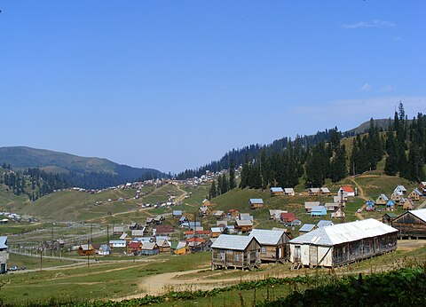

get to know georgia
ბახმარო — დაბა და კურორტი გურიაში, ჩოხატაურის მუნიციპალიტეტში. ბახმარო კლიმატური მაღალმთიანი კურორტია, სადაც მთავარი სამკურნალო ფაქტორი მთისა და ზღვის შერეული ჰავაა. კურორტი სოჭითა და ნაძვით მდიდარ ქვაბულში, ზღვის დონიდან 1926-2050 მეტრზე მდებარეობს. ბახმაროს სამკურნალო თვისებები 1890-იან წლებში აღმოაჩინეს და მისი კურორტად ჩამოყალიბება მაშინვე დაიწყო. 1923 წელს ოფიციალურად მიენიჭა კურორტის სტატუსი. ბახმაროს სეზონი ზაფხულში დაახლოებით ორ თვეს გრძელდება და კულმინაციას ყოველი წლის 19 აგვისტოს ტრადიციული დოღისა და დღესასწაულის დროს აღწევს.

იური სიხარულიძის აზრით ბახმარო სვანური წარმოშობისაა და კაცის გადასასვლელს ნიშნავს. „ბახ“ არის გადასასვლელი, ხოლო „მარო“ არის სახეცვლილება სვანური „მარესი“, რომელიც კაცს ნიშნავს. ლეგენდის თანახმად კურორტის სახელი ულამაზეს თავადის ქალს, მაროს უკავშირდება. მარო თურქებმა მოიტაცეს, უკან დადევნებულ მდევარს კი ხანჯლით განგმირული დაუტოვეს, გვერდით ქვაზე კი, მისივე სისხლით დააწერეს: „ბახ მარო“ - ნახეთ თქვენი მარო.
ბახმარო მდებარეობს მესხეთის ქედზე, მდინარე ბახვისწყლის ხეობაში, ტყის ზონის ზემო ნაწილში. ზღვის დონიდან 1926-2050 მ, შავი ზღვის სანაპიროდან პირდაპირი ხაზით 50 კმ., ჩოხატაურიდან 52 კმ., ოზურგეთიდან (რკინიგზის უახლოესი სადგური) 72 კმ. ბახმაროს ტერიტორია წარმოადგენს ერთგვარ ქვაბულს, რომელიც გარშემორტყმულია აღმოსავლური ნაძვის, სოჭის და კავკასიური ფიჭვის მარადმწვანე ტყის კორომებისაგან. გეოლოგიურად ბახმაროს ტერიტორია აგებულია შუა ეოცენის ვულკანოგენურ-დანალექი ქანებით, რომლებიც ხასიათდებიან ინტენსიური დანაოჭებითა და ტექტონიკური რღვევების სიხშირით, რაც განაპირობებს გრუნტის წყლების სიუხვეს. საქართველოს ჰიდროგეოლოგიური დარაიონების სქემის მიხედვით ტერიტორია შედის მცირე კავკასიონის ნაოჭა ბელტური სისტემის, ჰიდროგეოლოგიური ოლქის დასავლეთი დაძირვის ზონაში.
ბახმარო მთის კლიმატური კურორტია, პროფილაქტიკური და პულმონოლოგიური პროფილით. სამედიცინო ჩვენება: სუნთქვის ორგანოთა არატუბერკულოზური დაავადებები, სისხლნაკლებობა, ნევრასთენია, ლიმფადენიტი. სეზონი - ივნისი-სექტემბერი. ოქტომბრიდან მაისამდე ბახმაროს გზა თოვლის გამო იკეტება. 19 აგვისტოს, ფერისცვალების დღესასწაულთან დაკავშირებით, ბახმაროში ყოველწლიურად იმართება დოღი და სხვა სადღესასწაულო ღონისძიებები, რითიც სეზონის დასრულება აღინიშნება. პოპულარული ადგილებია მზის „ამოსავალი“ (მთა გადრეკილი) და „ჩასავალი გორები“ (მთა საქასარია), საიდანაც დამსვენებლები მზის ამოსვლასა და ჩასვლას აკვირდებიან.